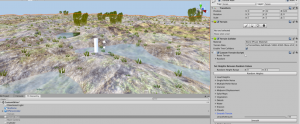
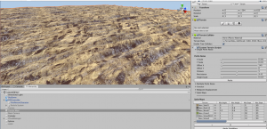
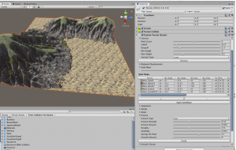
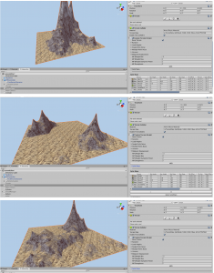

May 9, 2019
I have completed Penny De Byl’s outstanding Custom Terrain Udemy course. In this course, we built a menu full of tools to customize the terrain. There are several algorithms that go across the entire terrain: Random, Voronoi, Perlin, Midpoint displacement, and actual mapping data available from Google Earth. On top of these, you can add smoothing, and various types of erosion, such as rain, thermal, tidal, river, and wind. In addition, you can add one of these techniques after another so that the effects build on top of each other.
We added options to create canyons, add water, rain, clouds, sky domes, and fog. We created a ‘splatmap’ menu where you can add different textures to the landscape based on height and slope. We had menus for vegetation like trees, and other details like rocks and ferns, using either billboards or prefabs.
I have learned so much about creating environments from this course that I’m enjoying just experimenting with the settings. The ‘big picture’ settings are especially fun to play with since they are not very intuitive unless you have recent experience with the math behind them. Below are some examples that I’ve made.
The coolest and easiest is using actual geographic height maps, like this one from Alaska:
Random terrains need a lot of smoothing unless you use very small values. This one was basically a bunch of spikes, but after 20 smoothing, it looks quite nice:

Perlin waves create sine waves, and can vary from a gentle undulating wave to tight rows like crops:

These Perlin waves shows one big wave across the x-axis, and several small waves across the y-axis.
Voronoi creates mounds where the height falls off until it gets closer to another peak where it starts rising again.
This landscape was created using Voronoi tessellation with serious river erosion effects, since the base voronoi settings usually give mild mounds:

Midpoint Displacement is one of the most varied and unpredictable. The following 3 examples used the exact same values.

I am still practicing, as I’m not at the point where I can reproduce a terrain easily. I’m starting to know which types of values will yield which types of results, but it is still more random than I would like. But the key is I understand the code and what it’s doing. Now it’s just a matter of time.